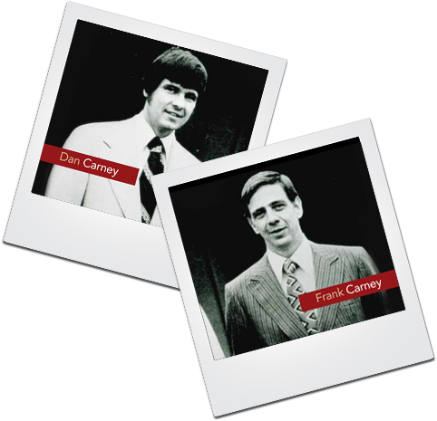
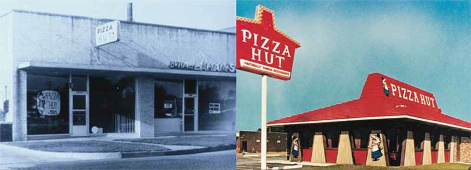
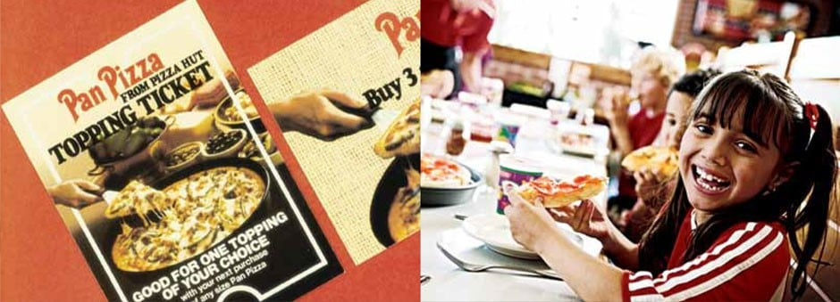

<div class="main-div">
    <div class="container">

        <!-- Header -->
        <div class="bar row py-3 ">
            <div class="icon col-4 d-none d-lg-block">
                <a routerLink="/home"><i class="fa-solid fa-less-than fa-2xl" style="color: #01040993;"></i></a>
            </div>
            <div class="title col-12 col-md-4 "> 
                <h2>About US</h2>
            </div>
            <div class="col-4 opacity-0 d-none d-lg-block">

            </div>
        </div>
    
        <!-- Content -->
        <div class="container Content text-center bg-light ">
    
            <h5>our history</h5>
    
            <div class="container w-75 p-3">       
                 <p>The Pizza Hut story begins in May 1958. Dan and Frank Carney opened their 550-squarefoot pizza restaurant in Wichita, Kansas. Dan and Frank, with friends Richard Beemer and John Bender, made the pizza themselves. Frank rolled the dough with a rolling pin. Richard tossed the dough in the air from the pie tin. Dan filled the unbaked crust with sauce. John flipped the pie from the tin during the baking process. Dan Carney recalled, 'The people were enchanted with the product, watching us tossing the dough over our heads. They were really enjoying themselves….'</p>
    
                <p>The Carneys created an innovative, high quality, engaging, informal eating experience in a friendly neighborhood restaurant. Pizza Hut became a popular place with the teenage and college crowd. Pizza Hut attracted families that enjoyed a night out eating a meal that they would not be having at home. After the families left, Pizza Hut transformed itself into a hangout for college-age kids. Having a good time was an essential part of Pizza Hut. The idea caught on. A second Pizza Hut opened in December 1958 in downtown Wichita. By 1963, there were forty-two Pizza Hut restaurants.</p>
            </div>
    
            
    
            
    
            <div class="container lcontetn">
                <p>Pizza Hut was always an entrepreneurial, innovative, fast-thinking place. It was the kind of organization where everyone shared the learning. As Frank Carney said, To me, the biggest strength of Pizza Hut was that we had an awful lot of people who came up with great ideas.Pizza Hut grew rapidly. Pizza Hut introduced Pan Pizza in 1980 throughout its network. The product, with a thicker crust made in deep pans, soon became popular. However, the basic internal philosophy was and still is Take care of the customer. The Pizza Hut brand experience resonates today: generosity, hard work, friendships, innovation, naturalness, and fun. It was and always will be more than just the pizza.</p>
            </div>
    
            
    
        </div>
    </div>
</div>